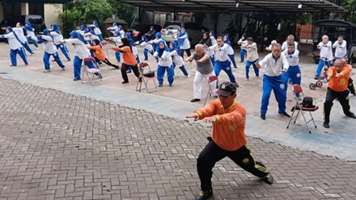

Home
Home
 Lokasi Sasana
Lokasi Sasana
 Analisa Gerakan
Analisa Gerakan
 Latihan Gerakan
Latihan Gerakan
 Pengaturan
Pengaturan
ELTEKERS
INDONESIA
Eltekers Indonesia
Pecinta Ling Tien Kung
Untuk Sehat Paripurna
Tentang
Halaman ini menyediakan informasi mengenai berbagai jenis terapi yang dapat mendukung pemulihan dan peningkatan performa atlet maupun individu yang aktif berlatih bela diri. Pengguna dapat menemukan terapi seperti fisioterapi, pijat olahraga, akupunktur, serta metode pemulihan lainnya. Setiap terapi dilengkapi dengan deskripsi manfaat, lokasi penyedia layanan, serta kontak untuk konsultasi atau pemesanan sesi terapi.

Testimoni Pengguna
"Saya mengalami nyeri lutut selama bertahun-tahun karena osteoarthritis. Setelah menjalani terapi di Eltekers, sekarang saya bisa berjalan lebih nyaman tanpa rasa sakit berlebihan."
- Budi Sanjaya, 26 tahun
"Dulu saya sering sakit punggung karena pekerjaan yang banyak duduk. Program terapi di Eltekers sangat membantu, sekarang badan lebih ringan dan nyaman."
- Ibu Rina, 48 tahun